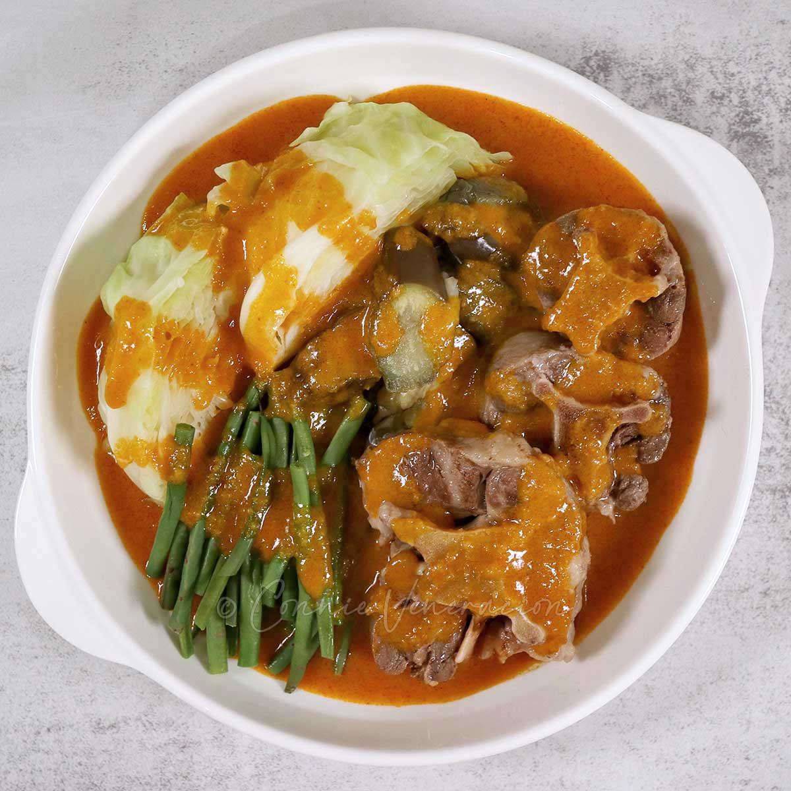

Kare-Kare Recipe

Ingredients:
- 1 lb oxtail, cut into pieces
- 1/2 lb tripe, cleaned and sliced (optional)
- 2 tbsp vegetable oil
- 3 cloves garlic, minced
- 1 small onion, chopped
- 4 cups water
- 1/2 cup peanut butter
- 1 tbsp annatto powder (achuete)
- 1/2 cup ground toasted rice
- 1/2 lb banana heart, sliced
- 1/2 lb eggplant, sliced
- 1/2 lb string beans, cut into 2-inch pieces
- 1/2 lb bok choy
- Salt and pepper to taste
- Bagoong (shrimp paste) for serving
Instructions:
- Boil the oxtail and tripe in water until tender. Set aside.
- In a pan, heat oil and sauté garlic and onion until fragrant.
- Add the boiled oxtail and tripe. Stir well.
- Dissolve annatto powder in a little water and add to the pan.
- Mix in peanut butter and ground toasted rice, stirring until sauce thickens.
- Add the vegetables and let them cook until tender.
- Season with salt and pepper to taste.
- Serve hot with bagoong (shrimp paste) on the side. Enjoy!
Back to Menu